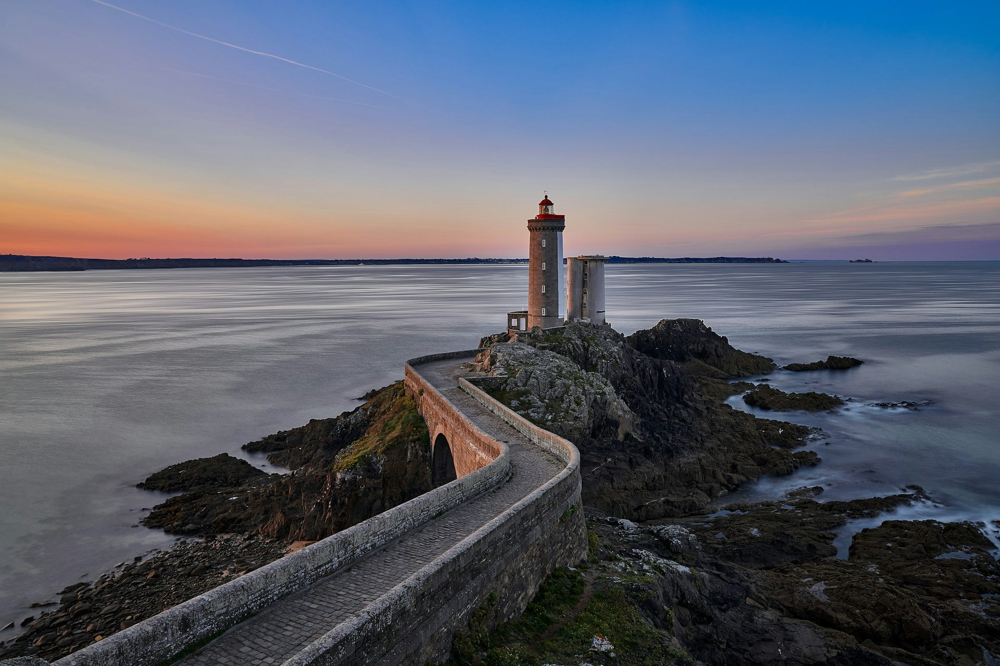

La Bretagne, entre remparts et granit rose
Des cités corsaires, des villes médiévales, des menhirs par milliers et des côtes sauvages : la Bretagne se visite toute l’année, même sous les embruns.
Photo : Roberto Gualini / Unsplash
La Bretagne aligne quelques-uns des plus beaux paysages côtiers de France : les remparts de Saint-Malo, les rochers roses de Ploumanac’h, les plages du Morbihan et les villes closes du Finistère. À l’intérieur des terres, Dinan, Quimper ou Rennes ont gardé leurs maisons à colombages et leurs ruelles médiévales.
Le TGV relie Paris à Rennes en 1 h 30 environ, puis à Saint-Malo ou Quimper. Pour la côte et les petits ports, une voiture reste le plus pratique. Chaque guide vous dit quoi voir, comment y aller et quoi réserver.
Que voir en Bretagne
-
 Saint-Malo
Saint-MaloLa ville close, le tour des remparts et le Grand Bé à marée basse, sur la côte d’Émeraude.
-
 Dinan
DinanMaisons à colombages, remparts et la rue du Jerzual qui descend jusqu’au port sur la Rance.
-
 Carnac
CarnacPrès de trois mille menhirs alignés sur des kilomètres, à deux pas des plages du Morbihan.
-
 Ploumanac’h et la Côte de Granit Rose
Ploumanac’h et la Côte de Granit RoseLe sentier des douaniers au milieu des rochers de granit rose, jusqu’au phare de Ploumanac’h.
-
 Quimper
QuimperLa cathédrale Saint-Corentin, les maisons à colombages et les passerelles fleuries de l’Odet.
-
 Concarneau
ConcarneauLa Ville Close sur son îlot fortifié, au milieu de l’un des grands ports de pêche de France.